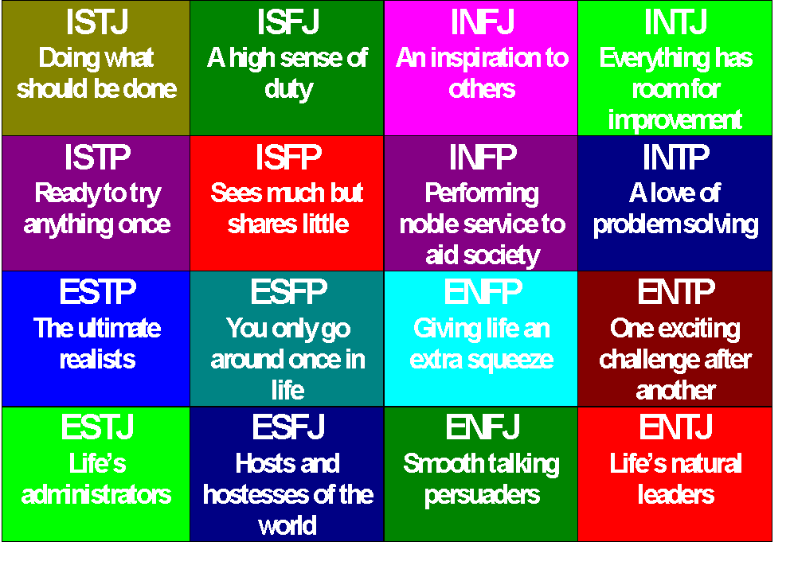
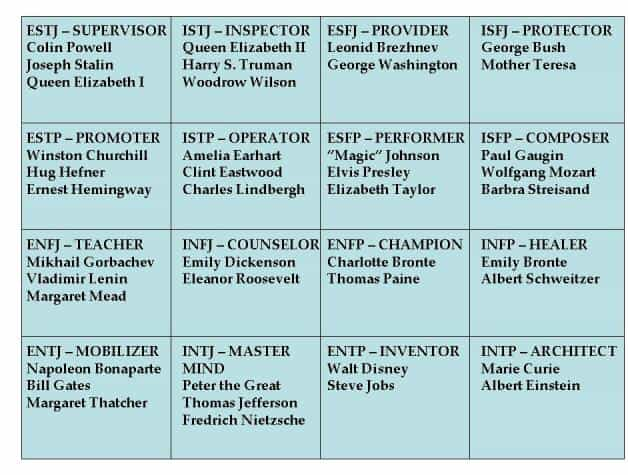

During my night approaches, I tend to shy away from scripted routines after the first couple of minutes. I respect guys who can put together engaging stories and deploy them with surgical precision, but my style tends to be a bit more conversational and extemporaneous.
Among an educated crowd in venues that promote conversation, one subject I often bring up is psychology, specifically personality types and their idiosyncrasies. Girls love to talk about their personalities, since it taps into their deep-rooted need to be part of a larger identity group, yet allows them enough leeway to show they are special snowflakes.
If I get a favorable initial reaction, I often bring up the Myers-Briggs (MBTI) personality test. The Myers-Briggs scale presents four different dimensions with two options for each, describing how a person creates energy, gathers information, makes decisions, and interacts with the world.

Myers-Briggs is a popular topic in undergraduate intro psych classes, and it may surprise you how many girls are familiar with the concept. I’ve found that about 20% of 22-28 year old girls know their type, and at least another 20% have heard of the test or are very interested in taking it. Ever notice how girls love to talk about astrology and their horoscopes? This subject touches the same interests and desires. Unlike astrology, however, it can provide valuable and actionable information to help your game.
If you know a girl’s type, you have a blueprint of what motivates them, how they are predisposed to spend their time, and how they view the world. For example, if you discover a girl is an “E” you may engage her about going out with her friends, involvement in group activities, and demonstrate that you are open to new experiences. If she’s an “I”, you will likely be able to have a deeper conversation where you emphasize your more introverted hobbies (traveling alone, playing a music instrument, writing) to build comfort and attraction.

The next level of incorporating MBTI comes when you can tailor your short and long-term game based on specific personality types. These are just a few examples:
INTJ / INTP – Their brains are wired more like men. You can have rational and often insightful conversations with them, and drama will be minimal compared with other types. Sex often has wild/rough elements. They may lack the feminine “spark” that immediately endears them to you, but you can spend a peaceful day with this type without wanting to tear your hair out. They are likely to be shy at the beginning. Challenge them with wit and show physical/intellectual dominance. A rare type for girls.
ENFJ – Many nurses and teachers fall into this category. These girls are sweet and will respond positively to small bits of “beta game”. ENFJs care about others, and they can be more engaging because they actually want to hear about your ideas and feelings. One of the best types to date in my experience.
ENFP – Prom queens. ENFPs are used to getting attention, and their egos are validated almost solely by the adoration of others. To capture her interest you need to push-pull as much as possible. Give her slight interest and then withdraw mercilessly. The script-flipping of making her search for your approval will bond her to you even more than with the average girl. If you’re an introvert, you’ll have to resist her pressure to go out more, meet people, and engage in social obligations in which you have little interest.
ESTP – These girls have a constant need for novelty and are keen manipulators. If you want to keep them in your rotation, switch things up and keep her guessing. ESTPs can range from absolute pleasures to used car salesmen, depending on your awareness of their subtle manipulation and how much you let them get away with.
INFJ – Ultimately you will get tired of dealing with their feelings. More than any other type, these girls have solid intuitions that they will follow blindly, even in the face of incontrovertible rational discourse. Their depth and number of feelings can be overwhelming to a repeated interaction, since they live in their heads more than ENFJs. May be more prone to depression and anxiety.
You can take the test for yourself, and familiarize yourself with the categories and the 16 types here.
As game continues to evolve from furry hats and magic tricks to a more optimized, lifestyle-oriented pursuit, specialization is a necessity to get the most out of your approaches. Familiarity with Myers-Briggs types provides insight that often takes precious time and effort to gather otherwise. By limiting the generalized game you pull from your normal playbook, Myers-Briggs can accelerate the process of building attraction and maintaining your frame, giving you an edge on the competition.
Read More: The Father Of Relationship Game Shares His Secrets